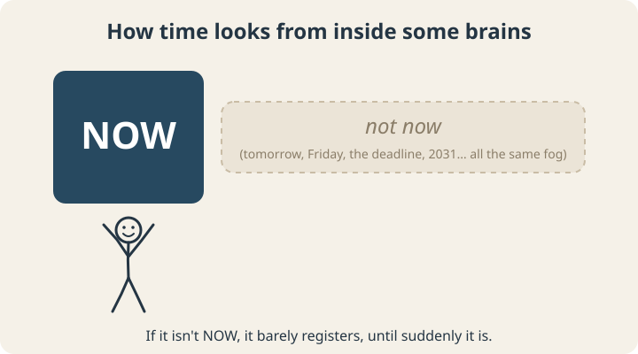
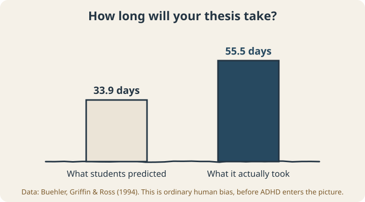

September 22, 2026
Time Blindness: Why “Five Minutes” Keeps Turning Into Forty

“I’ll be ready in five minutes.”
If you have said this sentence while fully believing it, and then emerged forty minutes later confused about where the time went, this post is for you. And if you live with someone who says it, this post is also for you, and you should maybe read it out loud together.
The feeling has a popular name: time blindness. Like “ADHD paralysis,” it isn’t an official diagnosis. But unlike a lot of internet psychology terms, this one sits on top of a solid pile of research.
What time blindness actually is
Time blindness is difficulty sensing time: noticing it passing, estimating how long things take, and feeling future deadlines as real before they’re right on top of you.
For many brains, time seems to have two settings:

Now is vivid, loud, and demands attention. Not now is a fog. The deadline on Friday and a dentist appointment in 2031 sit in roughly the same blurry zone, until Friday suddenly becomes Now, at which point it becomes an emergency.
This is why people with time blindness often are capable of doing great work under pressure. The pressure is what finally moves the task from the fog into the Now box.
Is this real, or just a thing people say?
It’s real, and it’s been measured.
In 2022, researchers pooled 27 studies comparing children and teens with and without ADHD on time perception tasks, such as estimating how long a tone lasted or reproducing a time interval. Across roughly 1,600 young people with ADHD and 1,250 without, the ADHD group judged time both less accurately (their estimates were further off) and less precisely (their estimates bounced around more), with moderate effect sizes.1
This fits a theory Russell Barkley laid out back in 1997: that ADHD weakens the brain’s ability to hold the future in mind and use it to guide what you do right now.2 If you can’t feel the future clearly, you can’t easily plan toward it. You react to whatever’s in front of you.
Everybody is a bit time blind
Underestimating how long things take happens to almost everyone, with or without ADHD. It even has a name: the planning fallacy.
In a classic 1994 study, researchers asked university students when they expected to finish their honors thesis. Then they waited and recorded when the students actually finished.3

The study wasn’t about ADHD at all. These were ordinary university students, and they were still off by more than 60%.
One explanation for why this happens is delightfully sneaky: we base our predictions on memories of how long things took before, and those memories are themselves too short.4 You remember your commute as 20 minutes because the 20-minute days are the ones that felt normal. The 35-minute days got filed under “weird exception.” So your brain is running its predictions on corrupted data.
Now stack a genuine difficulty sensing time on top of an already-optimistic human estimation system, and you get the full five-minutes-means-forty experience.
What time blindness looks like in real life
- Being chronically 10–15 minutes late, even when you started getting ready “early”
- Looking up from something absorbing and discovering it’s dark outside
- Feeling surprised by deadlines you knew about for weeks
- “I’ll just do one quick thing first” (it was not quick; it was not one thing)
- Wildly under-scheduling your day because every task was budgeted at its best-case time
- Losing track of how long it’s been since you did things: last haircut, last text to a friend, last oil change
None of these say anything about how much you respect other people’s time. Your internal clock just runs quieter than most, and the world assumes everyone can hear theirs.
How to make time visible again
If time is hard to sense, trying harder to sense it won’t get you far. What works better is putting time outside your head, where you can see it.
1. Use clocks that show time disappearing
Digital clocks show you a number. Analog clocks and visual timers show you a shape shrinking, which is much closer to how time actually feels. A visual countdown timer on your desk turns “not now” into something you can watch approach.
2. Measure, don’t guess
For one week, write down how long you think recurring tasks take, then time them. Shower, commute, getting out the door, answering email. Most people find a few tasks that are consistently double their estimate. Use the real numbers from then on. This directly fixes the corrupted-memory problem from the study above.
3. Plan backward from the hard edge
Instead of “I’ll leave around 8:30,” start from “I need to be sitting down at 9:00” and count backward: parking (5), drive (25), getting out the door (15). Suddenly you’re leaving at 8:15, not 8:30.
4. Add a buffer, on purpose, every time
A simple rule: take your honest estimate and add 50%. It will feel like too much. Given what the planning fallacy data shows about ordinary students, it probably isn’t.
5. Put alarms at transitions, not just deadlines
An alarm at 9:00 for a 9:00 meeting is useless. An alarm at 8:40 labeled “start wrapping up and find your keys” is the one that actually saves you.
Living with a quiet clock
Time blindness is a real, measurable difference in how some brains perceive time, sitting on top of a human tendency to underestimate that affects almost everyone. You can’t will your internal clock to get louder, but you can build an external one that’s hard to ignore.
If you’re curious how far off your own estimates run, our free time blindness calibrator compares your instinctive estimates against realistic benchmarks and gives you a personal planning correction factor.
Scope note: This article is educational. It isn’t a diagnosis, and coaching isn’t a substitute for medical or psychological care. If you suspect ADHD, a clinician who assesses adults is the right place to start.
Sources
- Zheng, Q., Wang, X., Chiu, K. Y., & Shum, K. K. (2022). Time perception deficits in children and adolescents with ADHD: A meta-analysis. Journal of Attention Disorders, 26(2), 267–281. doi.org/10.1177/1087054720978557
- Barkley, R. A. (1997). Behavioral inhibition, sustained attention, and executive functions: Constructing a unifying theory of ADHD. Psychological Bulletin, 121(1), 65–94. doi.org/10.1037/0033-2909.121.1.65
- Buehler, R., Griffin, D., & Ross, M. (1994). Exploring the “planning fallacy”: Why people underestimate their task completion times. Journal of Personality and Social Psychology, 67(3), 366–381. doi.org/10.1037/0022-3514.67.3.366
- Roy, M. M., Christenfeld, N. J. S., & McKenzie, C. R. M. (2005). Underestimating the duration of future events: Memory incorrectly used or memory bias? Psychological Bulletin, 131(5), 738–756. doi.org/10.1037/0033-2909.131.5.738